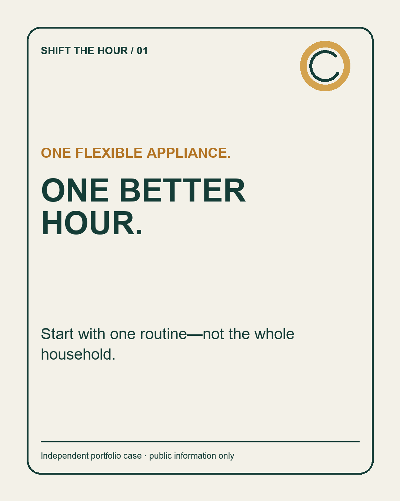
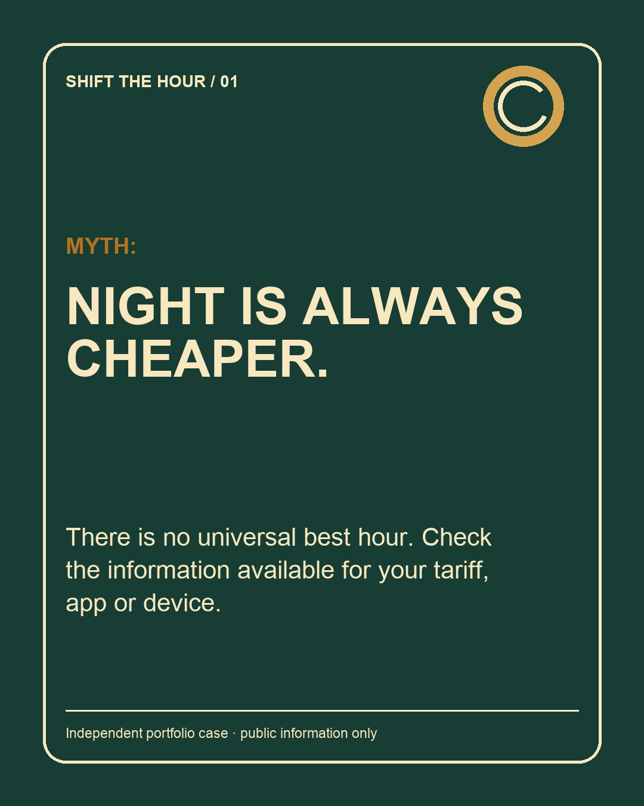
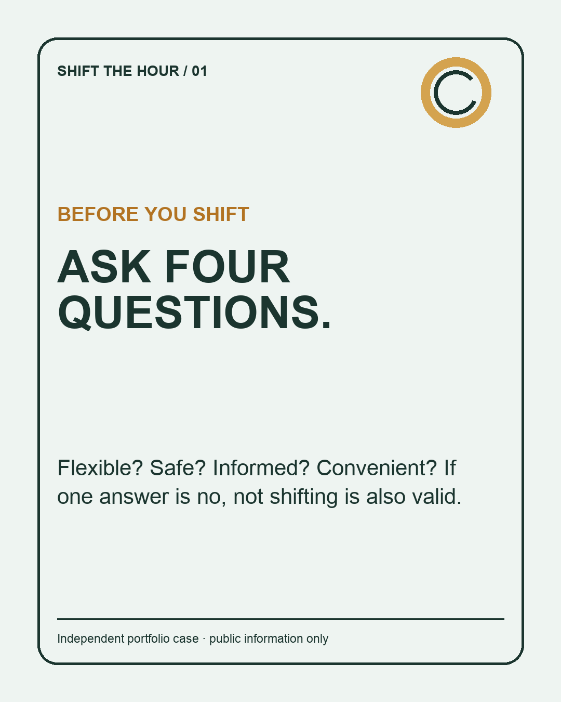

Understand
Timing can matter alongside total consumption.
ENERGY TRANSITION COMMUNICATION LAB
A bilingual campaign that turns household energy flexibility into one understandable, safe and measurable action—without promising a universal saving.
01 / THE BRIEF
“Use energy smarter” is not an action. The campaign asks the audience to start with one flexible appliance, check the information available from its tariff, app or device, and test one routine that fits daily life.
Price effects depend on tariff and circumstances. Safety and convenience come first.
02 / CAMPAIGN ASSETS
Original artwork, no company logo and no imitation of a product interface.



03 / FOUR-WEEK ORCHESTRATION
Twelve assets across LinkedIn, Instagram, Stories and short-form video.
04 / MEASUREMENT
Planning targets for an illustrative pilot, not observed results or E.ON benchmarks.
05 / TRANSPARENCY
Flexible demand can be one component of an increasingly electrified energy system. Households can explore flexibility when relevant information and safe controls are available.
No universal best hour, bill saving or emissions reduction is claimed. The case does not describe E.ON product functionality and does not speak on behalf of E.ON.